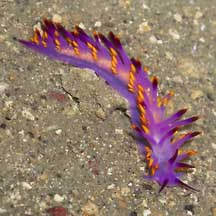
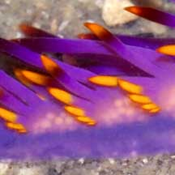
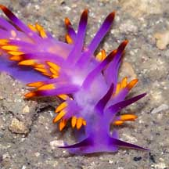
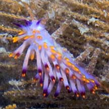
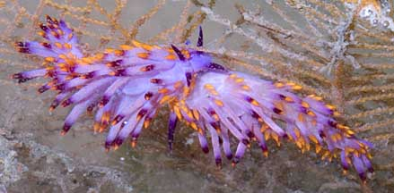
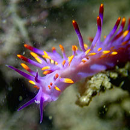
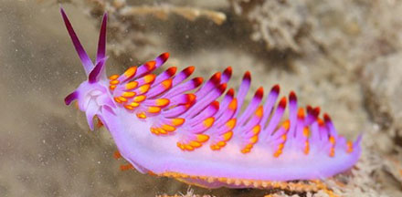
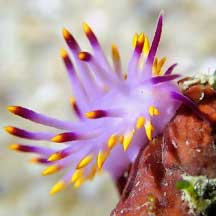

|
|
| nudibranchs text index | photo index |
| Phylum Mollusca > Class Gastropoda > sea slugs > Order Nudibranchia > Suborder Aeolidina |
| Cuthona
nudibranch Cuthona sibogae Family Tergipedidae updated May 2020 Where seen? This beautiful nudibranch is sometimes seen at Beting Bronok, and often encountered by divers on our reefs. Features: 2-3.5cm long. Long narrow, soft body with many long finger-like structures (called cerata) arranged in about 8 fan-like clusters along both sides of the body. It is distinguished by the purple body and yellow tips on the cerata with a band just below the tip. The rhinophores are slender and tipped reddish purple. It also has a pair of oral tentacles (like a moustache) which are also tipped reddish purple. Sometimes mistaken for the blue dragon nudibranch which has purple bands on the oral tentacles. What does it eat? It eats hydroids, including the orange Fern hydroid (Sertularella sp.). According to Bill Rudman, it feeds on Sertularella quadridens. |
 Beting Bronok, Jul 05 |
 Carrying eggs? |
 |
|
 Beting Bronok, May 11 |
 Mating? Beting Bronok, May 11 |
|
| Cuthona nudibranchs on Singapore shores |
On wildsingapore
flickr
|
| Other sightings on Singapore shores |
 Changi, Aug 19 Photo shared by Jianlin Liu on facebook. |
 Beting Bronok, May 11 Photo shared by James Koh on facebook. |
 St John's Island, Apr 21 Photo shared by Jianlin Liu on facebook. |
Links
|